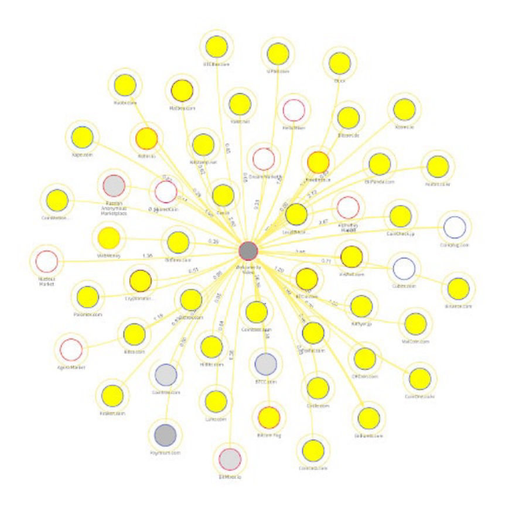
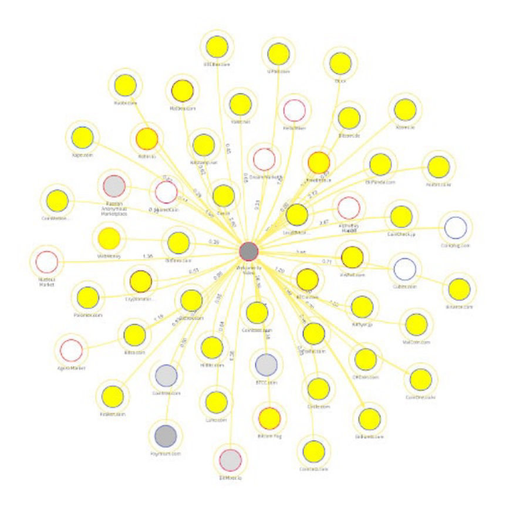

U.S. Loses Extradition Bid for the Welcome to Video Admin
~2 min read | Published on 2020-07-06, tagged Child-Porn, Money-Laundering using 347 words.
A South Korean court rejected a extradition request from the United States in a case against the administrator of the largest child pornography site on the darkweb.
A South Korean court found Jong Woo Son, 24, guilty of operating an onion service where he “monetize[d] child exploitation videos using bitcoin” called “Welcome to Video.” The court sentenced Son to 18 months in prison for his role as the administrator of the site. He completed his sentence in April 2020.
After completing the sentence, Son remained in custody while he waited for an extradition hearing. A nine-count indictment–returned by a grand jury in the District of Columbia–charged Son with an assortment of money laundering and child pornography crimes.

During the highly-publicized trial, human rights groups in South Korea called for Son’s extradition to the United States where he faced a lengthy prison sentence (some Welcome to Video users in the United States received 15-year prison sentences). Son’s father fought to prevent his son from being extradited. As described in a previous article about the case, Son’s father filed a lawsuit against Son in an attempt to block the extradition.
On June 7, reports from South Korea announced that the Seoul High Court had ruled against Son’s extradition to the United States. The court’s decision was based on the country’s ability to fight “sexually exploitative content” in the future. Son’s extradition to the United States would interfere with South Korea’s investigation into Welcome to Video and similar sites.
The court also said, “The decision should not be interpreted as exonerating him. Son should actively cooperate with the investigation and face proper punishment.”
An international investigation into Welcome to Video resulted in the arrest of 337 suspects worldwide, the seizure of approximately eight terabytes of child sexual exploitation videos, and the rescue of 23 children.
Son operated Welcome To Video website from 2015 to March 2018. In that time, the site’s Bitcoin addresses received more than 420 Bitcoins in more than 7, 000 transactions. An I.P. leak led investigators to Son’s residence where they arrested Son and took control of the site.
A South Korean court found Jong Woo Son, 24, guilty of operating an onion service where he “monetize[d] child exploitation videos using bitcoin” called “Welcome to Video.” The court sentenced Son to 18 months in prison for his role as the administrator of the site. He completed his sentence in April 2020.
After completing the sentence, Son remained in custody while he waited for an extradition hearing. A nine-count indictment–returned by a grand jury in the District of Columbia–charged Son with an assortment of money laundering and child pornography crimes.

The Welcome to Video seizure banner
During the highly-publicized trial, human rights groups in South Korea called for Son’s extradition to the United States where he faced a lengthy prison sentence (some Welcome to Video users in the United States received 15-year prison sentences). Son’s father fought to prevent his son from being extradited. As described in a previous article about the case, Son’s father filed a lawsuit against Son in an attempt to block the extradition.
On June 7, reports from South Korea announced that the Seoul High Court had ruled against Son’s extradition to the United States. The court’s decision was based on the country’s ability to fight “sexually exploitative content” in the future. Son’s extradition to the United States would interfere with South Korea’s investigation into Welcome to Video and similar sites.
The court also said, “The decision should not be interpreted as exonerating him. Son should actively cooperate with the investigation and face proper punishment.”
An international investigation into Welcome to Video resulted in the arrest of 337 suspects worldwide, the seizure of approximately eight terabytes of child sexual exploitation videos, and the rescue of 23 children.
Son operated Welcome To Video website from 2015 to March 2018. In that time, the site’s Bitcoin addresses received more than 420 Bitcoins in more than 7, 000 transactions. An I.P. leak led investigators to Son’s residence where they arrested Son and took control of the site.